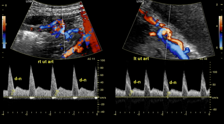

Página 10 · Sofrimento fetal crônico
Doppler: antever o processo, os 4 vasos e a uterina
A restrição repercute na vida adulta — mais doença metabólica — e já foi questão de prova. O Doppler existe para antever a insuficiência antes de o feto ficar pequeno ou o líquido secar.
O estrago já feito × antever
O estrago já feito × antever. Feto já pequeno e líquido já reduzido são a consequência de uma insuficiência placentária já estabelecida — quando o estrago aparece, ele já aconteceu. O objetivo do Doppler é outro: antever o processo 👁️ — rastrear a insuficiência antes de o feto ficar pequeno ou o líquido reduzir, evitando repercussões mais graves. É a virada do raciocínio: sair de “ver o dano” para “ver o dano chegando”.
A conta que se paga na vida adulta
A conta que se paga na vida adulta. E há motivo de sobra para antecipar: a restrição de crescimento tem repercussão na vida adulta — mais doença metabólica — e isso já foi questão de prova. O que acontece no útero não fica no útero.
Interativo: toque em cada vaso para ver função, normal, alarme e o dono.
A gramática espacial de todo o arco: uterina = mãe · umbilical = placenta · cerebral média = feto · ducto venoso = coração fetal. A pegadinha número um é confundir o dono do vaso — a uterina é da mãe, não do feto.Os quatro vasos e o que cada um estuda
Os quatro vasos e o que cada um estuda. O Doppler (velocimetria/fluxometria) estuda os vasos: ajuda a diferenciar o feto apenas pequeno da restrição verdadeira e, quando é restrição, a estimar a gravidade; interessa ao generalista e cai por imagem. São quatro vasos: artéria uterina (circulação materna), artéria umbilical (circulação placentária), artéria cerebral média (circulação fetal) e ducto venoso (função cardíaca fetal). Guarde esse mapa — ele estrutura tudo o que vem.
A uterina é da MÃE
A uterina é da MÃE. A pegadinha número um do Doppler: a artéria uterina é da MÃE — avalia a circulação materna, não a fetal. É o erro clássico de trocar o dono do vaso. A uterina avalia as modificações fisiológicas da gravidez: se as invasões trofoblásticas reduziram a resistência como deveriam.
Interativo: alterne entre uterina remodelada e persistente.
Invasão boa faz a incisura bilateral desaparecer; incisura persistente além de 24–26 semanas é predição de risco (restrição e pré-eclâmpsia), não diagnóstico.A invasão trofoblástica e o sumiço da incisura
A invasão trofoblástica e o sumiço da incisura. Invasões trofoblásticas bem-sucedidas fazem desaparecer a incisura bilateral da artéria uterina a partir da segunda metade da gravidez. No traçado, a incisura aparece como um afundamento — uma “rachadura” na curva —, normal no primeiro trimestre, preocupante se persistir.
A incisura persistente após 24–26 semanas
A incisura persistente > 24–26 semanas. A persistência da incisura bilateral da uterina além de 24–26 semanas indica RISCO (predição, não diagnóstico) de restrição de crescimento e de pré-eclâmpsia. Repare na palavra: predição. A incisura persistente não diz que o feto está restrito — diz que ele corre risco.

Nos dois espectros (uterina direita e esquerda), a incisura (“notch”, marcada d-n) é um afundamento no início da diástole. Sua persistência bilateral sugere maior impedância — placentação inadequada. É predição de risco, não diagnóstico.
Agolah D. Uterine arteries flow notching. Radiopaedia.org, rID 186814 · fonte / licença: CC BY-NC-SA 3.0
A oftálmica pode substituir a uterina
A oftálmica pode substituir a uterina. Um detalhe que a banca pode trocar: o Doppler da artéria oftálmica pode substituir o da uterina na predição de pré-eclâmpsia (parece até melhor). Se a prova mencionar a oftálmica no lugar da uterina, não se assuste.
Nota histórica: a braquial
Nota histórica: a braquial. Por um tempo tentou-se o Doppler da artéria braquial para avaliar a invasão trofoblástica; hoje a oftálmica se mostrou melhor. No Brasil, o mais usado ainda é o da uterina (a oftálmica é adotada por alguns serviços, não de forma uniforme). Serve para não estranhar em prova.
| Vaso | O que mede | Normal | Alarme |
|---|---|---|---|
| Uterina | circulação materna (invasão trofoblástica) | incisura ausente após a 2ª metade | incisura persistente > 24–26 sem (predição) |
| Umbilical | circulação placentária | baixa resistência, < p95 | > p95 → diástole afunda / zero / reversa |
| Cerebral média | circulação fetal | alta resistência, > p5 | < p5 = vasodilatação (centralização) |
| Ducto venoso | função cardíaca fetal | onda A positiva | onda A negativa → parto |
Tabelão da Vitalidade Fetal
- Volume de líquido (ILA)Soma dos 4 quadrantes · normal 8–18 · < 5 oligodrâmnio · 5–8 diminuído.aguardando
- Artéria uterina (mãe)Circulação materna · incisura ausente após a 2ª metade · alarme: incisura persistente > 24–26 sem (predição).aguardando
- Artéria umbilical (placenta)Baixa resistência < p95 · alarme: > p95 → diástole afunda → zero → reversa. Conduta por corte de idade gestacional.aguardando
- Artéria cerebral média (feto)Alta resistência > p5 · alarme: < p5 = vasodilatação = centralização (nobres: coração, cérebro, suprarrenal).aguardando
- Ducto venoso (coração fetal)Onda A positiva (normal) · alarme: onda A negativa → parto. Antes, sulfato de Mg < 32 sem.aguardando
- CardiotocografiaAvalia o feto durante as contrações — o próximo instrumento de vigilância.→ aula 2
- Perfil biofísicoCombina a cardiotocografia com parâmetros ultrassonográficos — completa a vigilância.→ aula 2
Quiz — fixação
Sobre a artéria uterina no Doppler obstétrico, é correto afirmar:
- Gabarito A. Uterina = mãe; incisura persistente = predição de risco.
- B troca o dono do vaso (é materna, não fetal) e confunde predição com diagnóstico.
- C o vaso da placenta é a umbilical — a uterina não a substitui.
- D a incisura é normal no primeiro trimestre; só preocupa se persistir após 24–26 semanas.
Quais são os quatro vasos do Doppler obstétrico e o que cada um estuda?
- Gabarito A. É o mapa dos territórios.
- B embaralha todos os donos (o clássico erro de troca).
- C aorta e carótida não compõem o quarteto obstétrico.
- D oftálmica e braquial são alternativas/históricas para predição de pré-eclâmpsia, não os quatro vasos do arco.
Por que se investe em antever a insuficiência placentária com Doppler, mesmo antes de o feto ficar pequeno?
- Gabarito A. O Doppler antecipa o processo; a restrição repercute a longo prazo (doença metabólica).
- B Doppler mede resistência/fluxo, não peso.
- C justamente o contrário — há repercussão na vida adulta (já foi prova).
- D a uterina prediz risco, não diagnostica restrição estabelecida.